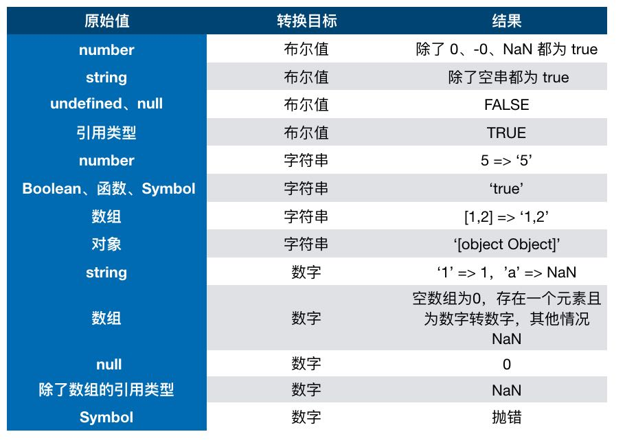

<!DOCTYPE html>
<html>
<head><meta name="generator" content="Hexo 3.8.0">
  <meta charset="utf-8">
  
  <title>JS基础知识梳理(一) | 周宇涛的网络日志</title>
  <meta name="viewport" content="width=device-width, initial-scale=1, maximum-scale=1">
  <meta name="description" content="最近花了点小钱买了本《前端面试之道》小册，目前刚看完JS基础知识部分，感觉挺不错的，收获挺多。由于是作者收集+个人积累所总结的知识，读后确实很有收获，但是毕竟是他人经验，时间一久，总是容易忘记。所以打算记录下来，毕竟好记性不如烂键盘，😄。">
<meta name="keywords" content="JS,基础,面试">
<meta property="og:type" content="article">
<meta property="og:title" content="JS基础知识梳理(一)">
<meta property="og:url" content="https://maczyt.github.io/2019/01/16/JS基础知识梳理/index.html">
<meta property="og:site_name" content="周宇涛的网络日志">
<meta property="og:description" content="最近花了点小钱买了本《前端面试之道》小册，目前刚看完JS基础知识部分，感觉挺不错的，收获挺多。由于是作者收集+个人积累所总结的知识，读后确实很有收获，但是毕竟是他人经验，时间一久，总是容易忘记。所以打算记录下来，毕竟好记性不如烂键盘，😄。">
<meta property="og:locale" content="default">
<meta property="og:image" content="https://maczyt.github.io/2019/01/16/JS基础知识梳理/01.jpg">
<meta property="og:updated_time" content="2019-01-17T13:09:32.858Z">
<meta name="twitter:card" content="summary">
<meta name="twitter:title" content="JS基础知识梳理(一)">
<meta name="twitter:description" content="最近花了点小钱买了本《前端面试之道》小册，目前刚看完JS基础知识部分，感觉挺不错的，收获挺多。由于是作者收集+个人积累所总结的知识，读后确实很有收获，但是毕竟是他人经验，时间一久，总是容易忘记。所以打算记录下来，毕竟好记性不如烂键盘，😄。">
<meta name="twitter:image" content="https://maczyt.github.io/2019/01/16/JS基础知识梳理/01.jpg">
  
    <link rel="alternate" href="/atom.xml" title="周宇涛的网络日志" type="application/atom+xml">
  
  
    <link rel="icon" href="/favicon.ico">
  
  
    
  
  <link rel="stylesheet" href="/css/style.css">
  

</head>
</html>
<body>
  <div id="container">
    <div id="wrap">
      <header id="header">
  <div id="banner"></div>
  <div id="header-outer" class="outer">
    
    <div id="header-inner" class="inner">
      <nav id="sub-nav">
        
          <a id="nav-rss-link" class="nav-icon" href="/atom.xml" title="RSS Feed"></a>
        
        <a id="nav-search-btn" class="nav-icon" title="搜索"></a>
      </nav>
      <div id="search-form-wrap">
        <form action="//google.com/search" method="get" accept-charset="UTF-8" class="search-form"><input type="search" name="q" class="search-form-input" placeholder="Search"><button type="submit" class="search-form-submit">&#xF002;</button><input type="hidden" name="sitesearch" value="https://maczyt.github.io"></form>
      </div>
      <nav id="main-nav">
        <a id="main-nav-toggle" class="nav-icon"></a>
        
          <a class="main-nav-link" href="/">首页</a>
        
          <a class="main-nav-link" href="/archives">归档</a>
        
          <a class="main-nav-link" href="/about">关于</a>
        
      </nav>
      
    </div>
    <div id="header-title" class="inner">
      <h1 id="logo-wrap">
        <a href="/" id="logo">周宇涛的网络日志</a>
      </h1>
      
    </div>
  </div>
</header>
      <div class="outer">
        <section id="main"><article id="post-JS基础知识梳理" class="article article-type-post" itemscope="" itemprop="blogPost">
  <div class="article-meta">
    <a href="/2019/01/16/JS基础知识梳理/" class="article-date">
  <time datetime="2019-01-16T14:05:44.000Z" itemprop="datePublished">2019-01-16</time>
</a>
    
  </div>
  <div class="article-inner">
    
    
      <header class="article-header">
        
  
    <h1 class="article-title" itemprop="name">
      JS基础知识梳理(一)
    </h1>
  

      </header>
    
    <div class="article-entry" itemprop="articleBody">
      
        <!-- Table of Contents -->
        
        <p>最近花了点小钱买了本《前端面试之道》小册，目前刚看完JS基础知识部分，感觉挺不错的，收获挺多。由于是作者收集+个人积累所总结的知识，读后确实很有收获，但是毕竟是他人经验，时间一久，总是容易忘记。所以打算记录下来，毕竟好记性不如烂键盘，😄。</p>
<a id="more"></a>
<h2 id="基本数据类型-英文为Primitive"><a href="#基本数据类型-英文为Primitive" class="headerlink" title="基本数据类型(英文为Primitive)"></a>基本数据类型(英文为Primitive)</h2><h3 id="boolean"><a href="#boolean" class="headerlink" title="boolean"></a>boolean</h3><p><code>true</code>和<code>false</code>, 这里注意<strong><code>new Boolean</code>和<code>Boolean</code></strong>的区别。</p>
<p>如果使用<code>new Boolean()</code>会返回一个Boolean对象，而使用<code>Boolean()</code>则返回一个基础boolean类型。</p>
<p>等于false的值: <code>false</code>, <code>&#39;&#39;</code>, <code>undefined</code>, <code>null</code>, <code>0</code>, <code>NaN</code>。<br>判断代码:<br><figure class="highlight js"><table><tr><td class="gutter"><pre><span class="line">1</span><br><span class="line">2</span><br><span class="line">3</span><br></pre></td><td class="code"><pre><span class="line"><span class="keyword">if</span> ([<span class="literal">false</span>, <span class="string">''</span>, <span class="literal">undefined</span>, <span class="literal">null</span>, <span class="number">0</span>, <span class="literal">NaN</span>].every(<span class="function"><span class="params">item</span> =&gt;</span> !<span class="built_in">Boolean</span>(item))) &#123;</span><br><span class="line">  <span class="built_in">console</span>.log(<span class="string">'全部等于false'</span>);</span><br><span class="line">&#125;</span><br></pre></td></tr></table></figure></p>
<h4 id="使用例子"><a href="#使用例子" class="headerlink" title="使用例子"></a>使用例子</h4><ol>
<li>清除数组中的false项: <code>arr.filter(Boolean)</code></li>
<li>待补充</li>
</ol>
<h3 id="null"><a href="#null" class="headerlink" title="null"></a>null</h3><blockquote>
<p><strong>null并不是对象</strong>, 这个算是JS的bug。因为在JS的最初版本中使用的是32位系统，出于性能考虑使用低位存储变量的类型信息，<code>000</code>开头代表是对象，然而<code>null</code>为全零表示，所以错误的判断为对象。<br>from 小册</p>
</blockquote>
<h3 id="undefined"><a href="#undefined" class="headerlink" title="undefined"></a>undefined</h3><p>表示变量只声明但是未赋值</p>
<h3 id="number"><a href="#number" class="headerlink" title="number"></a>number</h3><p>浮点类型，会有精度缺失问题。坑点预警。</p>
<h3 id="string"><a href="#string" class="headerlink" title="string"></a>string</h3><p>单纯的字符串。</p>
<h3 id="symbol"><a href="#symbol" class="headerlink" title="symbol"></a>symbol</h3><p><code>ES6</code>新引入的类型，为了唯一性.</p>
<h2 id="复合数据类型-对象"><a href="#复合数据类型-对象" class="headerlink" title="复合数据类型(对象)"></a>复合数据类型(对象)</h2><p>对象变量存储的是对象的指针地址。</p>
<h2 id="如何判断数据类型"><a href="#如何判断数据类型" class="headerlink" title="如何判断数据类型"></a>如何判断数据类型</h2><h3 id="typeof"><a href="#typeof" class="headerlink" title="typeof"></a>typeof</h3><p>对于<code>typeof null</code>会返回<code>object</code>，上面解释了这是一个bug。其他的数据基本ok,</p>
<figure class="highlight js"><table><tr><td class="gutter"><pre><span class="line">1</span><br><span class="line">2</span><br><span class="line">3</span><br><span class="line">4</span><br><span class="line">5</span><br></pre></td><td class="code"><pre><span class="line"><span class="keyword">typeof</span> <span class="number">1</span> <span class="comment">// number</span></span><br><span class="line"><span class="keyword">typeof</span> <span class="string">'zyt'</span> <span class="comment">// string</span></span><br><span class="line"><span class="keyword">typeof</span> <span class="literal">undefined</span> <span class="comment">// undefined</span></span><br><span class="line"><span class="keyword">typeof</span> <span class="literal">true</span> <span class="comment">// boolean</span></span><br><span class="line"><span class="keyword">typeof</span> &#123;&#125; <span class="comment">// object</span></span><br></pre></td></tr></table></figure>
<h3 id="instanceof"><a href="#instanceof" class="headerlink" title="instanceof"></a>instanceof</h3><p>从名字上来看，表示是否是其的实例对象。适用于复合类型数据的判断.</p>
<figure class="highlight js"><table><tr><td class="gutter"><pre><span class="line">1</span><br><span class="line">2</span><br></pre></td><td class="code"><pre><span class="line"><span class="keyword">const</span> arr = <span class="keyword">new</span> <span class="built_in">Array</span>();</span><br><span class="line">arr <span class="keyword">instanceof</span> <span class="built_in">Array</span>; <span class="comment">// true</span></span><br></pre></td></tr></table></figure>
<h2 id="类型转换"><a href="#类型转换" class="headerlink" title="类型转换"></a>类型转换</h2><p></p>
<h3 id="转成布尔值"><a href="#转成布尔值" class="headerlink" title="转成布尔值"></a>转成布尔值</h3><p>使用<code>Boolean</code>。如:</p>
<figure class="highlight js"><table><tr><td class="gutter"><pre><span class="line">1</span><br><span class="line">2</span><br><span class="line">3</span><br><span class="line">4</span><br><span class="line">5</span><br><span class="line">6</span><br><span class="line">7</span><br><span class="line">8</span><br><span class="line">9</span><br><span class="line">10</span><br><span class="line">11</span><br><span class="line">12</span><br></pre></td><td class="code"><pre><span class="line"><span class="comment">// 1. number -&gt; boolean</span></span><br><span class="line"><span class="built_in">Boolean</span>(<span class="number">1</span>); <span class="comment">// true</span></span><br><span class="line"><span class="built_in">Boolean</span>(<span class="number">0</span>); <span class="comment">// false</span></span><br><span class="line"><span class="built_in">Boolean</span>(<span class="literal">NaN</span>); <span class="comment">// false</span></span><br><span class="line"><span class="comment">// 2. string -&gt; boolean</span></span><br><span class="line"><span class="built_in">Boolean</span>(<span class="string">''</span>); <span class="comment">// false</span></span><br><span class="line"><span class="built_in">Boolean</span>(<span class="string">'zyt'</span>); <span class="comment">// true</span></span><br><span class="line"><span class="comment">// 3. undefined/null -&gt; boolean</span></span><br><span class="line"><span class="built_in">Boolean</span>(<span class="literal">null</span>); <span class="comment">// false</span></span><br><span class="line"><span class="built_in">Boolean</span>(<span class="literal">undefined</span>); <span class="comment">// false</span></span><br><span class="line"><span class="comment">// 4. 对象 -&gt; Boolean</span></span><br><span class="line"><span class="built_in">Boolean</span>([]); <span class="comment">// true</span></span><br></pre></td></tr></table></figure>
<h3 id="转成字符串"><a href="#转成字符串" class="headerlink" title="转成字符串"></a>转成字符串</h3><p>使用<code>String</code>。如:</p>
<figure class="highlight js"><table><tr><td class="gutter"><pre><span class="line">1</span><br><span class="line">2</span><br><span class="line">3</span><br><span class="line">4</span><br><span class="line">5</span><br><span class="line">6</span><br><span class="line">7</span><br><span class="line">8</span><br><span class="line">9</span><br><span class="line">10</span><br><span class="line">11</span><br><span class="line">12</span><br><span class="line">13</span><br></pre></td><td class="code"><pre><span class="line"><span class="comment">// 1. number -&gt; string</span></span><br><span class="line"><span class="built_in">String</span>(<span class="number">1</span>); <span class="comment">// '1'</span></span><br><span class="line"><span class="built_in">String</span>(<span class="literal">NaN</span>); <span class="comment">// 'NaN'</span></span><br><span class="line"><span class="comment">// 2. boolean -&gt; string</span></span><br><span class="line"><span class="built_in">String</span>(<span class="literal">false</span>); <span class="comment">// 'false'</span></span><br><span class="line"><span class="comment">// 3. 函数 -&gt; string. 并不是上图说的为'true'，而是为函数体</span></span><br><span class="line"><span class="built_in">String</span>(<span class="function"><span class="keyword">function</span>(<span class="params"></span>) </span>&#123;&#125;); <span class="comment">// 'function() &#123;&#125;'</span></span><br><span class="line"><span class="comment">// 4. 数组 -&gt; string. 机制等同于 arr.join(',')</span></span><br><span class="line"><span class="built_in">String</span>([]); <span class="comment">// '';</span></span><br><span class="line"><span class="built_in">String</span>([<span class="number">1</span>,<span class="number">2</span>,<span class="number">3</span>]); <span class="comment">// '1,2,3'</span></span><br><span class="line"><span class="comment">// 5. 对象 -&gt; string</span></span><br><span class="line"><span class="built_in">String</span>(&#123;&#125;); <span class="comment">// "[object Object]"</span></span><br><span class="line"><span class="comment">// 6. null/undefined  =&gt; 'null'/'undefined'</span></span><br></pre></td></tr></table></figure>
<h3 id="转成数字"><a href="#转成数字" class="headerlink" title="转成数字"></a>转成数字</h3><p>使用<code>Number</code>。如:</p>
<figure class="highlight js"><table><tr><td class="gutter"><pre><span class="line">1</span><br><span class="line">2</span><br><span class="line">3</span><br><span class="line">4</span><br><span class="line">5</span><br><span class="line">6</span><br><span class="line">7</span><br></pre></td><td class="code"><pre><span class="line"><span class="comment">// 1. string -&gt; number, 如果含有非数字字符，则返回NaN，表示不是一个数字</span></span><br><span class="line"><span class="built_in">Number</span>(<span class="string">'1'</span>); <span class="comment">// 1</span></span><br><span class="line"><span class="comment">// 2. 数组 -&gt; number</span></span><br><span class="line"><span class="built_in">Number</span>([]); <span class="comment">// 0</span></span><br><span class="line"><span class="built_in">Number</span>([<span class="number">1</span>]); <span class="comment">// NaN</span></span><br><span class="line"><span class="comment">// 3. null/undefined =&gt; 0/NaN, 这里因为null是用全零表示，所以会转成0</span></span><br><span class="line"><span class="comment">// 4. 对象 -&gt; number =&gt; NaN</span></span><br></pre></td></tr></table></figure>
<p>以上<code>String</code>、<code>Number</code>、<code>Boolean</code>方法转换都不能加<code>new</code>，否则则会转成相应的对象。</p>
<h2 id="隐式类型转换-类型自动转换"><a href="#隐式类型转换-类型自动转换" class="headerlink" title="隐式类型转换(类型自动转换)"></a>隐式类型转换(类型自动转换)</h2><p>当我们执行下面的表达式时，类型将会进行自动转换。</p>
<ol>
<li>== 判断</li>
<li>加减乘除运算</li>
</ol>
<h3 id="先来点题目"><a href="#先来点题目" class="headerlink" title="先来点题目"></a>先来点题目</h3><figure class="highlight js"><table><tr><td class="gutter"><pre><span class="line">1</span><br><span class="line">2</span><br><span class="line">3</span><br><span class="line">4</span><br><span class="line">5</span><br><span class="line">6</span><br><span class="line">7</span><br><span class="line">8</span><br><span class="line">9</span><br></pre></td><td class="code"><pre><span class="line"><span class="keyword">const</span> obj1 = &#123;&#125;;</span><br><span class="line"><span class="keyword">const</span> obj2 = &#123;</span><br><span class="line">  valueOf() &#123;</span><br><span class="line">    <span class="keyword">return</span> <span class="number">1</span>;</span><br><span class="line">  &#125;</span><br><span class="line">&#125;;</span><br><span class="line"></span><br><span class="line">obj1 == <span class="number">1</span>; <span class="comment">// ?</span></span><br><span class="line">obj2 == <span class="number">1</span>; <span class="comment">// ?</span></span><br></pre></td></tr></table></figure>
<p>答案是: <code>false</code>, <code>true</code></p>
<p>当一方为对象，而另一方为基础类型时，对象将会进行如下规则转换:</p>
<ol>
<li>调用<code>valueOf</code>方法，如果返回的是基础类型则返回转换的值，否则则进入下一步（数组调用<code>valueOf</code>,便是返回本身，如: [1,2,3].valueOf() =&gt; [1,2,3]）</li>
<li>调用<code>toString</code>方法，如果返回的是基础类型则返回转换的值，否则会报错，让我们来看看报错的例子。<figure class="highlight js"><table><tr><td class="gutter"><pre><span class="line">1</span><br><span class="line">2</span><br><span class="line">3</span><br><span class="line">4</span><br><span class="line">5</span><br><span class="line">6</span><br><span class="line">7</span><br><span class="line">8</span><br><span class="line">9</span><br><span class="line">10</span><br></pre></td><td class="code"><pre><span class="line"><span class="keyword">const</span> obj = &#123;</span><br><span class="line">  valueOf() &#123;</span><br><span class="line">    <span class="keyword">return</span> &#123;&#125;; <span class="comment">// 返回对象，非基础类型</span></span><br><span class="line">  &#125;,</span><br><span class="line">  toString() &#123;</span><br><span class="line">    <span class="keyword">return</span> &#123;&#125;; <span class="comment">// 返回对象，非基础类型</span></span><br><span class="line">  &#125;</span><br><span class="line">&#125;;</span><br><span class="line"></span><br><span class="line">obj == <span class="number">1</span>; <span class="comment">// Uncaught TypeError: Cannot convert object to primitive value</span></span><br></pre></td></tr></table></figure>
</li>
</ol>
<hr>
<figure class="highlight js"><table><tr><td class="gutter"><pre><span class="line">1</span><br><span class="line">2</span><br></pre></td><td class="code"><pre><span class="line"><span class="string">'zyt'</span> + <span class="number">123</span>; <span class="comment">// ?</span></span><br><span class="line"><span class="number">4</span> + [<span class="number">1</span>,<span class="number">2</span>,<span class="number">3</span>]; <span class="comment">// ?</span></span><br></pre></td></tr></table></figure>
<p>答案是: <code>zyt123</code>, <code>41,2,3</code></p>
<p>规则如下:</p>
<ol>
<li>有一方为字符串，那么就会把另一方也转成字符串。</li>
<li>如果既不是字符串也不是数字的前提下，如果原值是基础类型(boolean等)等价于调用<code>Number</code>, 如果为对象, 则调用上面复合类型的规则。</li>
</ol>
<figure class="highlight js"><table><tr><td class="gutter"><pre><span class="line">1</span><br><span class="line">2</span><br><span class="line">3</span><br><span class="line">4</span><br><span class="line">5</span><br><span class="line">6</span><br><span class="line">7</span><br><span class="line">8</span><br><span class="line">9</span><br><span class="line">10</span><br><span class="line">11</span><br><span class="line">12</span><br><span class="line">13</span><br><span class="line">14</span><br><span class="line">15</span><br><span class="line">16</span><br><span class="line">17</span><br><span class="line">18</span><br><span class="line">19</span><br><span class="line">20</span><br><span class="line">21</span><br><span class="line">22</span><br><span class="line">23</span><br><span class="line">24</span><br><span class="line">25</span><br><span class="line">26</span><br><span class="line">27</span><br><span class="line">28</span><br><span class="line">29</span><br><span class="line">30</span><br><span class="line">31</span><br><span class="line">32</span><br></pre></td><td class="code"><pre><span class="line"><span class="literal">undefined</span> + <span class="number">1</span>; <span class="comment">// 符合规则2， 等价于 Number(undefined) + 1; =&gt; NaN + 1 =&gt; NaN</span></span><br><span class="line"><span class="literal">null</span> + <span class="number">1</span>; <span class="comment">// 符合规则2，等价于Number(null) + 1; =&gt; 0 + 1 =&gt; 1</span></span><br><span class="line">[] + <span class="number">1</span>; <span class="comment">// 符合复合类型规则, 因为数组的valueOf返回本事，所以，等价于[].toString() + 1 =&gt; '' + 1; 这里符合规则1 =&gt; '1'</span></span><br><span class="line">(&#123;&#125;) + <span class="number">1</span>; <span class="comment">// 符合复合类型, 和数组类型，所以等价于 (&#123;&#125;).toString() + 1 =&gt; '[object Object]' + 1; 这里符合规则1 =&gt; '[object Object]1'</span></span><br><span class="line"></span><br><span class="line"><span class="comment">// 自定义对象方法</span></span><br><span class="line"><span class="keyword">const</span> obj1 = &#123;</span><br><span class="line">  valueOf() &#123;</span><br><span class="line">    <span class="keyword">return</span> <span class="number">100</span>;</span><br><span class="line">  &#125;</span><br><span class="line">&#125;</span><br><span class="line">obj1 + <span class="number">1</span>; <span class="comment">// 等价于 obj1.valueOf() + 1 =&gt; 100 + 1 =&gt; 101;</span></span><br><span class="line"></span><br><span class="line"><span class="keyword">const</span> obj2 = &#123;</span><br><span class="line">  valueOf() &#123;</span><br><span class="line">    <span class="keyword">return</span> &#123;&#125;</span><br><span class="line">  &#125;,</span><br><span class="line">  toString() &#123;</span><br><span class="line">    <span class="keyword">return</span> <span class="string">'100'</span>;</span><br><span class="line">  &#125;</span><br><span class="line">&#125;;</span><br><span class="line">obj2 + <span class="number">1</span>;  <span class="comment">// 等价于 obj2.toString() + 1 =&gt; '100' + 1 =&gt; '1001'</span></span><br><span class="line"></span><br><span class="line"><span class="keyword">const</span> obj3 = &#123;</span><br><span class="line">  valueOf() &#123;</span><br><span class="line">    <span class="keyword">return</span> &#123;&#125;</span><br><span class="line">  &#125;,</span><br><span class="line">  toString() &#123;</span><br><span class="line">    <span class="keyword">return</span> &#123;&#125;;</span><br><span class="line">  &#125;</span><br><span class="line">&#125;</span><br><span class="line">obj3 + <span class="number">1</span>; <span class="comment">// 报错 VM2821:9 Uncaught TypeError: Cannot convert object to primitive value</span></span><br></pre></td></tr></table></figure>
<h2 id="问题修复"><a href="#问题修复" class="headerlink" title="问题修复"></a>问题修复</h2><ol>
<li>关于复合类型转成原始类型的规则，有一个特例<code>Date</code>对象，这个转换目前还没找到规则，如你知道还请告知。<figure class="highlight js"><table><tr><td class="gutter"><pre><span class="line">1</span><br><span class="line">2</span><br><span class="line">3</span><br></pre></td><td class="code"><pre><span class="line"><span class="keyword">const</span> date = <span class="keyword">new</span> <span class="built_in">Date</span>();</span><br><span class="line">+date; <span class="comment">// 1547730531065</span></span><br><span class="line">date + <span class="number">1</span>; <span class="comment">// 'Thu Jan 17 2019 21:08:51 GMT+0800 (中国标准时间)1'</span></span><br></pre></td></tr></table></figure>
</li>
</ol>
<blockquote>
<p>希望对你有帮助, 不足之处还请指出</p>
</blockquote>

      
    </div>
    <footer class="article-footer">
      <a data-url="https://maczyt.github.io/2019/01/16/JS基础知识梳理/" data-id="cjth9afch0005nkvv2578gc31" class="article-share-link">分享</a>
      
      
      
  <ul class="article-tag-list"><li class="article-tag-list-item"><a class="article-tag-list-link" href="/tags/JS/">JS</a></li><li class="article-tag-list-item"><a class="article-tag-list-link" href="/tags/基础/">基础</a></li><li class="article-tag-list-item"><a class="article-tag-list-link" href="/tags/面试/">面试</a></li></ul>

    </footer>
  </div>
  
    
 <script src="/jquery/jquery.min.js"></script>
  <div id="random_posts">
    <h2>推荐文章</h2>
    <div class="random_posts_ul">
      <script>
          var random_count =4
          var site = {BASE_URI:'/'};
          function load_random_posts(obj) {
              var arr=site.posts;
              if (!obj) return;
              // var count = $(obj).attr('data-count') || 6;
              for (var i, tmp, n = arr.length; n; i = Math.floor(Math.random() * n), tmp = arr[--n], arr[n] = arr[i], arr[i] = tmp);
              arr = arr.slice(0, random_count);
              var html = '<ul>';
            
              for(var j=0;j<arr.length;j++){
                var item=arr[j];
                html += '<li><strong>' + 
                item.date + ':&nbsp;&nbsp;<a href="' + (site.BASE_URI+item.uri) + '">' + 
                (item.title || item.uri) + '</a></strong>';
                if(item.excerpt){
                  html +='<div class="post-excerpt">'+item.excerpt+'</div>';
                }
                html +='</li>';
                
              }
              $(obj).html(html + '</ul>');
          }
          $('.random_posts_ul').each(function () {
              var c = this;
              if (!site.posts || !site.posts.length){
                  $.getJSON(site.BASE_URI + 'js/posts.js',function(json){site.posts = json;load_random_posts(c)});
              } 
               else{
                load_random_posts(c);
              }
          });
      </script>
    </div>
  </div>

    
<nav id="article-nav">
  
    <a href="/2019/01/20/深入浅出Promise/" id="article-nav-newer" class="article-nav-link-wrap">
      <strong class="article-nav-caption">上一篇</strong>
      <div class="article-nav-title">
        
          深入浅出Promise
        
      </div>
    </a>
  
  
    <a href="/2019/01/14/从microTask、macroTask到async-await简单了解/" id="article-nav-older" class="article-nav-link-wrap">
      <strong class="article-nav-caption">下一篇</strong>
      <div class="article-nav-title">从microTask、macroTask到async-await简单了解</div>
    </a>
  
</nav>

  
</article>
 
     
  <div class="comments" id="comments">
    
     
       
      <div id="cloud-tie-wrapper" class="cloud-tie-wrapper"></div>
    
       
      
      
  </div>
 
  

</section>
           
    <aside id="sidebar">
  
    

  
    
    <div class="widget-wrap">
    
      <div class="widget" id="toc-widget-fixed">
      
        <strong class="toc-title">文章目录</strong>
        <div class="toc-widget-list">
              <ol class="toc"><li class="toc-item toc-level-2"><a class="toc-link" href="#基本数据类型-英文为Primitive"><span class="toc-number">1.</span> <span class="toc-text">基本数据类型(英文为Primitive)</span></a><ol class="toc-child"><li class="toc-item toc-level-3"><a class="toc-link" href="#boolean"><span class="toc-number">1.1.</span> <span class="toc-text">boolean</span></a><ol class="toc-child"><li class="toc-item toc-level-4"><a class="toc-link" href="#使用例子"><span class="toc-number">1.1.1.</span> <span class="toc-text">使用例子</span></a></li></ol></li><li class="toc-item toc-level-3"><a class="toc-link" href="#null"><span class="toc-number">1.2.</span> <span class="toc-text">null</span></a></li><li class="toc-item toc-level-3"><a class="toc-link" href="#undefined"><span class="toc-number">1.3.</span> <span class="toc-text">undefined</span></a></li><li class="toc-item toc-level-3"><a class="toc-link" href="#number"><span class="toc-number">1.4.</span> <span class="toc-text">number</span></a></li><li class="toc-item toc-level-3"><a class="toc-link" href="#string"><span class="toc-number">1.5.</span> <span class="toc-text">string</span></a></li><li class="toc-item toc-level-3"><a class="toc-link" href="#symbol"><span class="toc-number">1.6.</span> <span class="toc-text">symbol</span></a></li></ol></li><li class="toc-item toc-level-2"><a class="toc-link" href="#复合数据类型-对象"><span class="toc-number">2.</span> <span class="toc-text">复合数据类型(对象)</span></a></li><li class="toc-item toc-level-2"><a class="toc-link" href="#如何判断数据类型"><span class="toc-number">3.</span> <span class="toc-text">如何判断数据类型</span></a><ol class="toc-child"><li class="toc-item toc-level-3"><a class="toc-link" href="#typeof"><span class="toc-number">3.1.</span> <span class="toc-text">typeof</span></a></li><li class="toc-item toc-level-3"><a class="toc-link" href="#instanceof"><span class="toc-number">3.2.</span> <span class="toc-text">instanceof</span></a></li></ol></li><li class="toc-item toc-level-2"><a class="toc-link" href="#类型转换"><span class="toc-number">4.</span> <span class="toc-text">类型转换</span></a><ol class="toc-child"><li class="toc-item toc-level-3"><a class="toc-link" href="#转成布尔值"><span class="toc-number">4.1.</span> <span class="toc-text">转成布尔值</span></a></li><li class="toc-item toc-level-3"><a class="toc-link" href="#转成字符串"><span class="toc-number">4.2.</span> <span class="toc-text">转成字符串</span></a></li><li class="toc-item toc-level-3"><a class="toc-link" href="#转成数字"><span class="toc-number">4.3.</span> <span class="toc-text">转成数字</span></a></li></ol></li><li class="toc-item toc-level-2"><a class="toc-link" href="#隐式类型转换-类型自动转换"><span class="toc-number">5.</span> <span class="toc-text">隐式类型转换(类型自动转换)</span></a><ol class="toc-child"><li class="toc-item toc-level-3"><a class="toc-link" href="#先来点题目"><span class="toc-number">5.1.</span> <span class="toc-text">先来点题目</span></a></li></ol></li><li class="toc-item toc-level-2"><a class="toc-link" href="#问题修复"><span class="toc-number">6.</span> <span class="toc-text">问题修复</span></a></li></ol>
          </div>
      </div>
    </div>

  
    

  
    
  
    
  
    

  
    
  
    <!--微信公众号二维码-->


  
</aside>

      </div>
      <footer id="footer">
  
  <div class="outer">
    <div id="footer-left">
      &copy; 2014 - 2019 maczyt&nbsp;|&nbsp;
      主题 <a href="https://github.com/giscafer/hexo-theme-cafe/" target="_blank">Cafe</a>
    </div>
     <div id="footer-right">
      联系方式&nbsp;|&nbsp;369280416@qq.com
    </div>
  </div>
</footer>
 <script src="/jquery/jquery.min.js"></script>
    </div>
    <nav id="mobile-nav">
  
    <a href="/" class="mobile-nav-link">首页</a>
  
    <a href="/archives" class="mobile-nav-link">归档</a>
  
    <a href="/about" class="mobile-nav-link">关于</a>
  
</nav>
    
<script>
// Elevator script included on the page, already.
window.onload = function() {
  var elevator = new Elevator({
    selector:'.back-to-top-btn',
    element: document.querySelector('.back-to-top-btn'),
    duration: 1000 // milliseconds
  });
}
</script>
      

  
    <script>
      var cloudTieConfig = {
        url: document.location.href, 
        sourceId: "",
        productKey: "e2fb4051c49842688ce669e634bc983f",
        target: "cloud-tie-wrapper"
      };
    </script>
    <script src="https://img1.ws.126.net/f2e/tie/yun/sdk/loader.js"></script>
    

  


<!-- author:forvoid begin -->
<!-- author:forvoid begin -->

<!-- author:forvoid end -->

<!-- author:forvoid end -->


  
    <script type="text/x-mathjax-config">
      MathJax.Hub.Config({
        tex2jax: {
          inlineMath: [ ['$','$'], ["\\(","\\)"]  ],
          processEscapes: true,
          skipTags: ['script', 'noscript', 'style', 'textarea', 'pre', 'code']
        }
      })
    </script>

    <script type="text/x-mathjax-config">
      MathJax.Hub.Queue(function() {
        var all = MathJax.Hub.getAllJax(), i;
        for (i=0; i < all.length; i += 1) {
          all[i].SourceElement().parentNode.className += ' has-jax';
        }
      })
    </script>
    <script type="text/javascript" src="https://cdn.rawgit.com/mathjax/MathJax/2.7.1/MathJax.js?config=TeX-AMS-MML_HTMLorMML"></script>
  


 <script src="/js/is.js"></script>


  <link rel="stylesheet" href="/fancybox/jquery.fancybox.css">
  <script src="/fancybox/jquery.fancybox.pack.js"></script>


<script src="/js/script.js"></script>
<script src="/js/elevator.js"></script>
  </div>
</body>
</html>